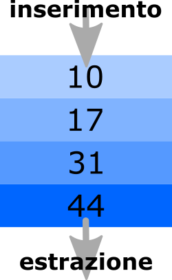
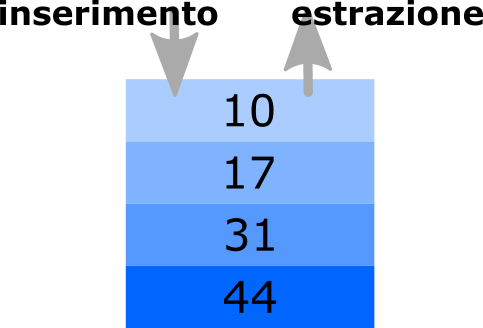

Nella costruzione di un programma non sempre è possibile stabilire il numero esatto di dati che dovrà usare quando sarà eseguito, per questo sono essenziali le strutture dati dinamiche come i vettori. Poniamo che ad esempio io debba leggere un elenco di nomi da un file su disco: quanti saranno quei nomi?
Una struttura dati dinamica è una struttura in cui si possono inserire informazioni e che viene costruita a tempo di esecuzione cioè quando il programma sta funzionando.I vettori sono strutture dinamiche perché posso dimensionarli a tempo di esecuzione hanno però un limite: la loro lunghezza viene stabilita al momento della creazione e non può più essere variata né tanto meno posso essere rimossi elementi da un vettore. Quando queste condizioni risultano essere limitanti si può far ricorso ad altre strutture che possono cambiare la loro dimensione durante l'esecuzione del programma.
ArrayList
Molto spesso quando serve avere una struttura che si espande dinamicamente in java
si usa java.util.ArrayList. Questo oggetto è molto flessibile e permette di
inserire/rimuovere/leggere elementi da qualsiasi punto dell'elenco che implementa.
Alcuni metodi utili dell'ArrayList sono:
- add( elemento )
- aggiunge "elemento" in fondo alla coda
- add( posizione, elemento)
- inserisce "elemento" alla posizione specificata
- get( posizione )
- ritorna l'elemento presente alla posizione specificata
- size()
- ritorna il numero di elementi presenti nella lista
- remove(posizione)
- rimuove l'elemento presente alla posizione specificata
Proviamo a vedere un esempio:
// alla creazione di un ArrayiList specifico il tipo degli oggetti che conterrà
ArrayList<String> elenco = new ArrayList<String>();
elenco.add("cane"); // elenco conterrà ["cane"]
elenco.add("gatto"); // elenco conterrà ["cane", "gatto"]
nome = elenco.get(0);
System.out.println(nome); // stamperà "cane"
nome = elenco.get(1);
System.out.println(nome); // stamperà "gatto"
elenco.add(0,"pollo"); // elenco conterrà ["pollo", "cane", "gatto"]
nome = elenco.get(0);
System.out.println(nome); // stamperà pollo
System.out.println(elenco.size()); // stamperà "3"
elenco.remove(1); // elenco conterrà ["pollo", "gatto"]
System.out.println(elenco.size()); // stamperà "2"
Le code
Una coda (a volte chiamata anche lista) è in pratica l'implemantazione informatica di una coda alla cassa del supermercato: può contenere un elenco di oggetti di lunghezza indefinita (nel senso che si espande e contrae all'occorrenza) e nella sua forma più elementare ci consente soltanto due operazioni: inserire oggetti ad un estremo ed astrarli dall'altro. Questa struttura è normalmente classificata come "FIFO": First In First Out, il primo elemento che entra è anche il primo ad uscire.

L'implementazione di base di questo oggetto prevede due sole operazioni:- inserisci
- inserisce un elemento in fondo alla coda
- estrai
- estrae un elemento dalla testa della coda
Nella foto di esempio sono stati inserirti nell'ordine i numeri 44, 31, 17 e alla fine 10. Quando si andranno ad estrarre il primo numero ad uscire sarà il 44. Una volta estratto un elemento questo sparisce dalla struttura dati: nel nostro esempio dopo aver estratto il 44 la coda sarà composta da tre soli elementi: "10, 17, 31".
Creo una coda e inserisco prima il numero 19 poi il numero 7 poi il numero 0. Quando farò la prima estrazione cosa otterrò?
19 si, è il primo ad essere stato inserito 7 no, per primo esce... il primo inserito 0 no, è l'ultimo ad essere stato inseritoAlcune implementazioni delle code permettono anche di fare ulteriori operazioni come ad esempio controllare quanto è lunga una coda o inserire/cancellare elementi in posizioni arbitrarie.
Le code nella libreria standard java
Formalmente nella libreria standard java ci sono diversi oggetti che implementano le code,
va bene ad esempio java.util.LinkedList che in realtà ha qualche metodo
in più rispetto all'implemtazione di base, vediamo un esempio:
String nome;
LinkedList<String> codaDiNomi = new LinkedList<String>();
codaDiNomi.add("mario"); // la coda ha un solo elemento: "mario"
codaDiNomi.add("lucia"); // in fondo alla coda adesso c'è "lucia"
codaDiNomi.add("paola"); // in fondo alla coda adesso c'è "paola"
nome = codaDiNomi.remove(); // "mario" perché è l'elemento in testa alla coda
System.out.println( nome );
nome = codaDiNomi.element(); // "lucia" perché è l'elemento in testa alla coda
System.out.println( nome );
nome = codaDiNomi.remove(); // ancora "lucia" perché element() non lo aveva estratto
System.out.println( nome );
Le pile
Una pila gestisce gli oggetti un po' come... la pila dei piatti: l'ultimo piatto che metto sulla pila è il primo che prenderò quando mi servirà un piatto. Anche la pila può contenere un elenco di oggetti di lunghezza indefinita (nel senso che si espande e contrae all'occorrenza) e nella sua forma più elementare ci consente soltanto due operazioni: inserire oggetti ad un estremo ed astrarli dalla stessa parte. Questa struttura è normalmente classificata come "LIFO": Last In First Out, l'ultimo elemento che entra è anche il primo ad uscire.

L'implementazione di base di questo oggetto prevede due sole operazioni:- inserisci
- inserisce un elemento in testa alla pila
- estrai
- estrae un elemento dalla testa della pila (una volta estratto non si trova più nella pila)
È possibile che una implementazione della pila prevada due ulteriori operazioni:
- leggiTesta
- legge l'elemento in testa alla pila senza estrarlo
- vuota
- ritorna true se la pila è vuota
Nella foto di esempio sono stati inserirti nell'ordine i numeri 44, 31, 17 e alla fine 10. Quando si andranno ad estrarre il primo numero ad uscire sarà il 10. Una volta estratto un elemento questo sparisce dalla struttura dati. Nel nostro esempio dopo aver estratto il 10 la pila sarà composta da tre soli elementi: "17, 31, 44".
Creo una pila e inserisco prima il numero 19 poi il numero 7 poi il numero 0. Quando farò la prima estrazione cosa otterrò?
19 no, è il primo ad essere stato inserito 7 no, per primo esce... l'ultimo inserito 0 giusto!Le pile nella libreria standard java
Nella libreria standard di java esiste una implementazione funzionante dell'oggetto pila:
java.util.Stack che fa esattamente quello che dovrebbe fare una pila e una cosa
in più: ci permette di guardare il primo elemento senza estrarlo. L'operazione di inserimento
si chiama push mentre quella di estrazione pop,
sono i nomi standard che si usano in questo contesto. Il metodo peek guarda in
cima alla pila ma non rimuove l'elemento. Proviamo a vedere un esempio:
String nome;
Stack<String> pilaDiNomi = new Stack<String>();
pilaDiNomi.push("mario"); // la pila ha un solo elemento: "mario"
pilaDiNomi.push("lucia"); // in testa (in cima) alla pila adesso c'è "lucia"
pilaDiNomi.push("paola"); // in testa alla pila adesso c'è "paola"
nome = pilaDiNomi.pop(); // "paola" perché è l'elemento in testa alla pila
System.out.println( nome );
nome = pilaDiNomi.peek(); // "lucia" perché è l'elemento in testa alla pila
System.out.println( nome );
nome = pilaDiNomi.pop(); // ancora "lucia" perché peek() non lo aveva estratto
System.out.println( nome );
nome = pilaDiNomi.pop(); // "mario", quello rimasto in cima alla pila
System.out.println( nome );